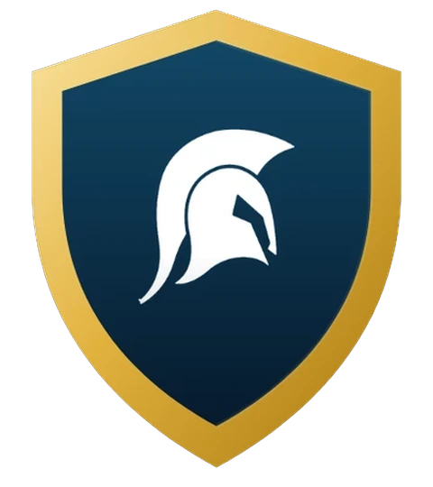

Más pequeño. Check azul como «cuenta verificada» junto al nombre, solo para quien se graduó de Networker Pro (Espartano). Al tocarlo: «🛡️ Espartano · Networker Pro completo».
OPCIÓN B · ESCUDO ESPARTANO
Viernes 20 de noviembre
Hola, Edwin

👋
Ahorro al díaIC 96%Equipo 33%
El mismo escudo de la insignia Espartano, pequeño junto al nombre.
OPCIÓN C · CHECK + PASTILLA
Viernes 20 de noviembre
Hola, Edwin 👋
ESPARTANO · Networker Pro
Ahorro al díaIC 96%Equipo 33%
Check junto al nombre y una pastilla oscura que dice el logro. Es la más clara para quien no sabe qué significa el check.